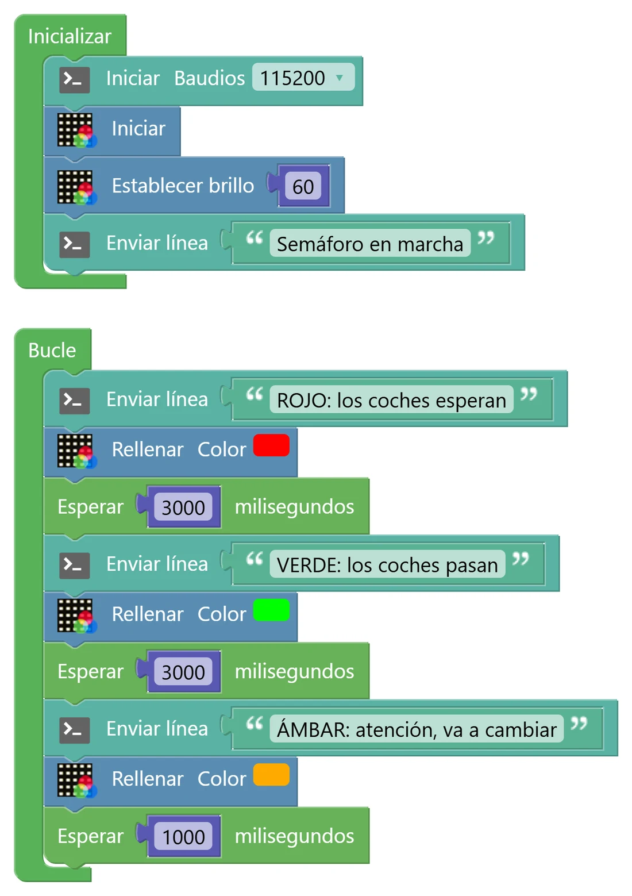
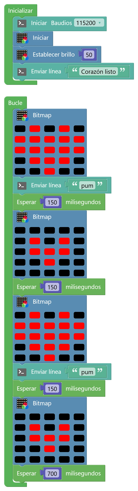

N1 Secuencias y tiempo
Un programa es una lista de órdenes que se ejecutan una detrás de otra, muy deprisa. Si quieres que algo dure, tienes que decirle a la placa que espere. Lo vamos a ver con colores y con una animación.
🎯 Objetivo
- Ordenar instrucciones para conseguir un comportamiento (secuencia).
- Controlar el tiempo con esperas y calcular cuánto dura un ciclo.
- Usar colores RGB y dibujar en la matriz con el bloque Bitmap.
- «Narrar» lo que hace el programa por la consola para poder comprobarlo.
🧠 Antes de empezar
El orden importa… y el tiempo también. La placa ejecuta millones de instrucciones por segundo. Si pones «rellenar de rojo» y justo después «rellenar de verde», el rojo dura una millonésima de segundo y tú solo ves el verde. El bloque Esperar congela el programa durante los milisegundos que le digas: es lo que hace que un color «dure».
Colores RGB. Cada LED de la matriz tiene en realidad tres luces pequeñitas: roja (R), verde (G) y azul (B). Cada una se enciende con una intensidad de 0 a 255. Mezclándolas se obtienen unos 16,7 millones de colores: (255, 0, 0) es rojo puro; (255, 170, 0), ámbar; (255, 255, 255), blanco.
Coordenadas de la matriz. Para dibujar, cada LED tiene una posición: la columna x (de 0 a 4, de izquierda a derecha) y la fila y (de 0 a 4, de arriba abajo). Internamente los 25 LED están numerados del 0 al 24, fila a fila: el número de un LED es y × 5 + x.
Numeración de los 25 LED. El de la esquina superior izquierda es el 0 (x = 0, y = 0).
🧩 Programa 1 · El semáforo
Vamos a convertir la matriz entera en un semáforo: rojo, verde y ámbar, cada uno el tiempo que le toca. Y para poder comprobar que el programa va por donde debe, cada vez que cambie de color lo contará por la consola.

- En Inicializar: consola a 115200 (Comunicaciones › Puerto serie), Iniciar la matriz y Establecer brillo a 60 (los dos en micro:STEAMakers › NeoMatrix) (de 0 a 255; a tope deslumbra y gasta más).
- En Bucle, para cada color, tres bloques en este orden: Enviar línea con el nombre del color, Rellenar con ese color (micro:STEAMakers › NeoMatrix; pulsa el cuadrado de color para elegirlo) y Esperar (Tiempo) el tiempo que dura.
- Rojo 3000 ms, verde 3000 ms y ámbar 1000 ms.
💡 Para entenderlo: ¿por qué hace falta Esperar?
Imagina que lees una receta en voz alta a toda velocidad: «enciende el horno, saca la bandeja, apaga el horno». Si nadie te dice «espera 20 minutos», el bizcocho no se hace. La placa es igual de obediente y mucho más rápida: ejecuta cada orden en una millonésima de segundo y pasa a la siguiente. Esperar es la única forma de que algo «dure».
Por eso, para saber cuánto dura un ciclo, basta con sumar las esperas: el resto de bloques tarda tan poco que no cuenta.
🖥️ Mira la consola
- ¿Cuánto dura un ciclo completo del semáforo? ¿Cuántos ciclos hace en un minuto?
- Activa la opción de mostrar la hora de cada línea (si tu consola la tiene) o cronometra: ¿coinciden los tiempos con los que programaste?
- Mueve el «Enviar línea» de cada color debajo de su «Esperar». ¿Qué cambia en la consola? ¿Te sigue sirviendo para saber qué color se ve en cada momento?
🧩 Programa 2 · Un corazón que late
Una animación no es más que una secuencia de dibujos (fotogramas) que se muestran uno tras otro con una espera entre medias, igual que un dibujo animado. Con el bloque Bitmap pintas los 25 LED de golpe, eligiendo el color de cada uno.

- En Inicializar: consola, Iniciar la matriz y brillo 50.
- En Bucle: un Bitmap (micro:STEAMakers › NeoMatrix; pulsa cada LED del bloque para cambiar su color) con el corazón grande, Enviar línea «pum» y Esperar 150 ms.
- Un Bitmap con el corazón pequeño y Esperar 150 ms.
- Repite el corazón grande con su «pum» (el latido es doble: pum-pum) y termina con el pequeño y una espera larga, de 700 ms.
Truco: copia y pega un Bitmap (Ctrl+C, Ctrl+V) para no tener que pintar los 25 LED cada vez.
- Suma las esperas de un latido completo. ¿Cuántos latidos por minuto da este corazón? ¿Es un ritmo normal para una persona en reposo?
- En la consola aparecen dos «pum» por latido. ¿Cómo podrías saber, solo mirando la consola, cuánto dura cada latido?
🎨 Diseñador de la matriz
Diseña aquí tus fotogramas antes de pasarlos al bloque Bitmap. Elige un color y pulsa los LED. Debajo verás qué LED has encendido, con su número y sus coordenadas, que es justo lo que necesitas para los retos.
Todavía no has encendido ninguno.
🚀 Retos
Semáforo de peatones
Convierte el semáforo en uno de peatones: verde fijo, verde parpadeando (encender y apagar varias veces) y rojo. La consola tiene que decir en todo momento qué está pasando.
Tu propia animación
Diseña una animación de al menos 4 fotogramas (una flecha que avanza, una cara que guiña un ojo, una ola…). Diséñala primero en el diseñador y documenta en el porfolio el número de cada LED encendido.
Corazón a 60 y a 120
Ajusta las esperas para que el corazón lata exactamente a 60 latidos por minuto, y después a 120 (como después de correr). Explica tus cálculos y comprueba el resultado contando los «pum» de la consola durante 30 segundos.
🔧 Bajo el capó: colores, LED y memoria
El bloque Rellenar del semáforo se convierte en esta instrucción. Fíjate en que el color ámbar que elegiste en la paleta se ha transformado en sus tres componentes:
micromatrix_steamakers.FillColor(CRGB(255,170,0)); // R=255, G=170, B=0 → ámbar delay(1000);
El Bitmap genera una función que recibe 25 colores, uno por LED, en orden de 0 a 24, y los copia a una lista (un array) antes de enviarlos todos de golpe a la matriz:
fnc_micromatrix_esp32ks_bitmap(CRGB(0,0,0), CRGB(255,0,0), CRGB(0,0,0), CRGB(255,0,0), CRGB(0,0,0), // fila 0: LED 0–4 CRGB(255,0,0), ... // fila 1: LED 5–9 ... ); // hasta el LED 24 // dentro de la librería: copia los 25 colores y llama a FastLED.show()
💡 ¿Cómo llegan los colores a cada LED?
Los 25 LED de la matriz (WS2812) están conectados en cadena a un único pin del ESP32, el io13. La placa envía por ese cable un tren de datos: 24 bits por LED (8 para el verde, 8 para el rojo y 8 para el azul, en ese orden). Cada LED se queda con los primeros 24 bits que le llegan y pasa el resto al siguiente. Por eso el orden de los LED (del 0 al 24) es tan importante.
🧮 La cuenta del corazón
Un latido completo dura 150 + 150 + 150 + 700 = 1150 ms. En un minuto (60 000 ms) caben 60 000 ÷ 1150 ≈ 52 latidos. Para el reto pro: si quieres 60 latidos por minuto, cada latido debe durar 1000 ms. Las tres primeras esperas ya suman 450 ms, así que la última tendría que ser de 550 ms.
(El tiempo que tarda la placa en enviar los colores es de unas centésimas de milisegundo: no cuenta en el cálculo).
Brillo. El bloque Establecer brillo no cambia los colores que guardas: aplica un factor a todos al enviarlos. Con brillo 60, un rojo de 255 sale aproximadamente a 255 × 60 ÷ 256 ≈ 60. Menos brillo significa menos consumo; lo mediremos de verdad en el N8 con el medidor de energía de la placa.
🔎 ¿Lo has entendido?
Cuando termines, haz una captura con tu puntuación para el porfolio.
📁 Al porfolio
- Capturas de tus programas (semáforo y animación) y de la consola de cada uno.
- Vídeo corto de la matriz funcionando (10–15 segundos basta).
- El diseño de tus fotogramas (captura del diseñador) con los números de LED que has usado.
- Los cálculos de tiempos: duración del ciclo del semáforo y latidos por minuto del corazón.
- Captura de tu resultado en «¿Lo has entendido?».